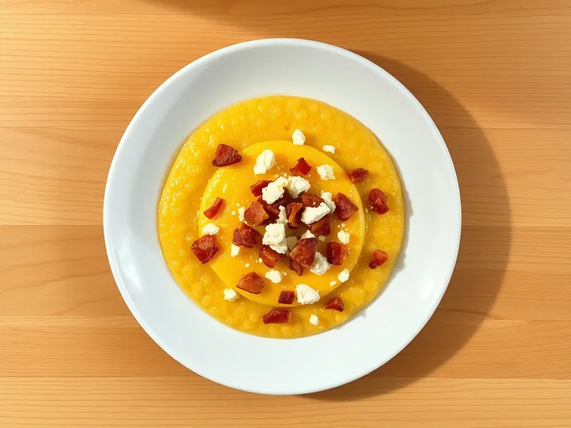

Банош с брынзой и шкварками
Гуцульская кукурузная каша на сметане с солёной брынзой и хрустящим беконом
30 мин3 порц.645 ккал на порциюБ 22 · Ж 44 · У 39Украинская кухня
Открыть в приложении: порции, таймеры, список покупок
Продукты на 3 порц.
- Кукурузная крупа150 г
- Сметана 20%300 г
- Вода300 мл
- Брынза / фета120 г
- Бекон100 г
- Соль2 щеп.
Как готовить
- Смешайте сметану с водой в кастрюле с толстым дном, посолите и доведите до кипения на среднем огне.
- Тонкой струйкой всыпьте мелкую кукурузную крупу, всё время помешивая деревянной лопаткой в одну сторону, чтобы не было комков.
- Варите на слабом огне 15-20 минут, постоянно помешивая, пока каша не загустеет, не начнёт отходить от стенок и на поверхности не выступят капельки масла.
- Тем временем нарежьте бекон мелкими кусочками и обжарьте на сухой сковороде на среднем огне 5-6 минут до хруста.
- Раскрошите брынзу. Разложите банош по тарелкам, посыпьте брынзой и шкварками и полейте вытопившимся жиром.
Совет. Нужна мелкая кукурузная крупа: крупный помол за 20 минут не разварится и останется жёстким.